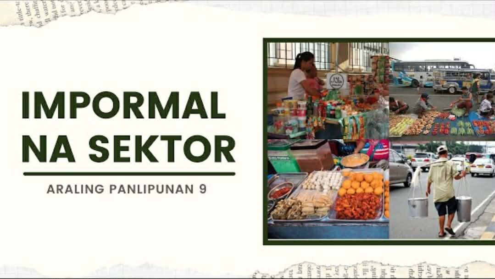
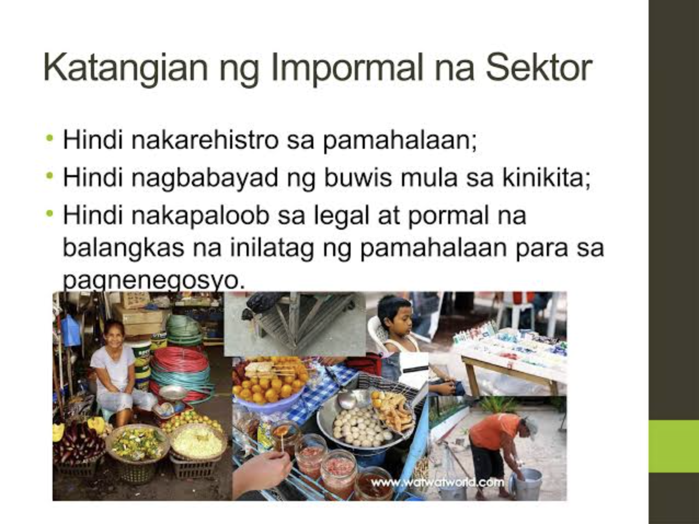

🛍️ Impormal na Sektor
Aralin 5 - Quarter 4
Ano ang Impormal na Sektor?
Sektor ng ekonomiya na walang pormal o salat sa mga dokumentong kailangan sa pagsasagawa ng gawaing pang-ekonomiya.
Ang kita ng sektor na ito ay HINDI naisasama sa kabuuang Gross Domestic Product (GDP) ng bansa.
Paraan ng mamamayan upang magkaroon ng kabuhayan/dagdag kita sa tuwing panahon ng pangangailangan.
Nagdudulot rin ng pagkakalikha ng mga produkto at serbisyong tutugon sa ating mga pangangailangan.
Kilala rin sa tawag na Underground Economy.
Halimbawa ng Mga Tao sa Sektor na Ito
- Nagtitinda sa kalsada
- Pedicab driver
- Karpintero
- Hindi rehistradong pampublikong sasakyan
Katangian ng Impormal na Sektor
- Hindi nakarehistro sa pamahalaan
- Hindi nagbabayad ng buwis mula sa kinita
- Walang legal at pormal na balangkas mula sa pamahalaan para sa pagnenegosyo
Iba’t Ibang Anyo ng Impormal na Sektor
- Mga gawaing maaaring isakatuparan lamang sa loob ng tahanan
- Mga gawaing pansibiko, pagkakawanggawa, at panrelihiyon
- Mga sari-sari stores, pagtitinda sa labas ng bahay o sidewalk, paglalako ng kalakal o serbisyo
- Ilegal na gawain tulad ng pagnanakaw, pagbebenta ng ilegal na gamot, piracy, at prostitusyon
Kahalagahan ng Impormal na Sektor
- Sinasalo nito ang mga mamamayan na hindi makapasok bilang mga regular na empleyado sa isang kompanya
- Nagbibigay ng pagkakataon sa maraming Pilipino na makapaghanapbuhay
- Nagsisilbing tagasalo ng mga mamamayang may mahigpit na pangangailangan
- Malaki ang naitutulong sa mga konsyumer ang mga kalakal at serbisyong mula sa impormal na sektor dahil sa MURA nitong halaga
Dahilan ng Pagpasok sa Impormal na Sektor
- Makaligtas sa pagbabayad ng buwis sa pamahalaan
- Makaiwas sa masyadong mahaba at masalimuot na proseso ng pakikipagtransaksyon sa pamahalaan (bureaucratic red tape)
- Kawalan ng regulasyon mula sa pamahalaan na kung saan ang mga batas at programa ay hindi naitutupad nang maayos
- Makapaghanapbuhay nang hindi nangangailangan ng malaking kapital o puhunan
- Malabanan ang matinding kahirapan
Epekto sa Ekonomiya
- Pagbaba ng halaga ng nalilikom na buwis
- Banta sa kapakanan ng mga mamimili
- Paglaganap ng mga ilegal na gawain
Batas, Programa, at Patakarang Pang-ekonomiya
- Social Reform and Poverty Alleviation Act of 1997 (R.A 8425)
- Magna Carta of Women (R.A 9710)
- Philippine Labor Code (P.D 422)
- Technical Education and Skills Development Act of 1994 (R.A 7796)
- Social Security Act of 1997 (R.A 8282)
- National Health Insurance Act of 1995 (R.A 7875)
Programa Para sa Mamamayan
- Dole Integrated Livelihood Program (DILP)
- Self-Employment Assistance Kaunlaran Program (SEA-K)
- Integrated Services for Livelihood Advancement of the Fisherfolks (ISLA)
- Cash-For-Work Program (CWP)
- Pantawid Pamilyang Pilipino Program (4Ps)

